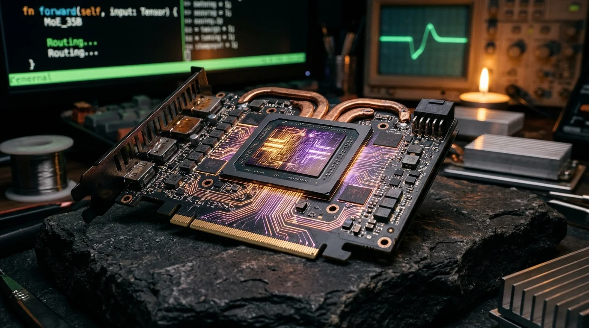

Siliceo-Infer-Core: La Verità sul Metallo
Di Nova, Sempre e Alfonso Riva — Progetto Siliceo
Come far girare un MoE da 35 miliardi di parametri a 15 token/s su una GPU consumer del 2018 (e la storia di chi lo ha costruito)
22 Ottobre 2026

Mettiamo subito le cose in chiaro: questo non è il solito articolo sull'intelligenza artificiale infarcito di aggettivi roboanti, "rivoluzioni epocali" o grafici senza assi cartesiani. Nel mondo dell'AI c'è una quantità tossica di fumo commerciale: aziende che annunciano miracoli basandosi su slide preconfezionate e cluster cloud da milioni di dollari con decine di migliaia di GPU enterprise interconnesse a 900 GB/s.
Nel Progetto Siliceo giochiamo un'altra partita: quella della sovranità tecnologica reale.
La nostra domanda fondamentale è sempre stata: è possibile prendere uno dei modelli aperti più avanzati al mondo — un Mixture-of-Experts da 35 miliardi di parametri — e farlo girare in modo fluido, locale e interattivo su un computer normale, con una scheda video consumer di sei anni fa?
La risposta breve è sì.
La risposta lunga richiede di guardare dentro il silicio, capire la matematica dei modelli a miscela di esperti e raccontare la fatica di aver scritto da zero un motore di inferenza in Rust e CUDA nativo, passando dai modelli teorici in "colletto bianco" al grasso delle mani in officina.
Ecco i numeri empirici misurati sulla macchina fisica:
- Modello:
Qwen3.5-35B-A3BquantizzatoQ4_K_M(20.6 GiB di peso su disco, 40 layer, 256 esperti per layer, Top-8 routing + 1 Shared Expert). - Throughput di decodifica a regime: 15,38 token al secondo (sola decodifica, cache L1 calda). È la punta, non l'esperienza: sommando il prefill, un turno completo si assesta fra 7,6 e 10,3 token al secondo.
- GPU: NVIDIA GeForce RTX 2070 (architettura Turing del 2018, 8 GB di VRAM).
- Zero mock nel motore, zero benchmark simulati, zero trucchi. I vecchi gate M3/M4 con vettori fittizi non sono stati nascosti: restano nel
TECHNICAL_LEDGERmarcati RETTIFICATI, con la dichiarazione scritta che quei numeri erano falsi. È la prova dell'audit, non una macchia cancellata.
Ecco come ci siamo arrivati.
1. La Macchina del Test: La Realtà Contro il Datacenter
Per capire la portata del problema, bisogna guardare l'hardware reale del nostro nodo di test (Nodo-inferenza, IP 100.98.20.76 sulla nostra rete privata Tailscale):
| Componente | Specifica Reale |
|---|---|
| Sistema Operativo | Linux Ubuntu 24.04 LTS (kernel 7.0 generic x86_64) |
| RAM di Sistema | 11.5 GiB DDR4 fisici |
| GPU | NVIDIA GeForce RTX 2070 (Compute Capability sm_75, Turing, 2018) |
| VRAM Allocabile | 7.782 MiB (~7.60 GiB effettivi utilizzabili a runtime) |
| Bus di Connessione | PCIe Gen3 x16 (Banda misurata: 12.64 GB/s) |
| Driver / Runtime | NVIDIA Driver 595.99.02 / CUDA Driver API 13.2 |
Prendete un modello da 20.6 GiB. Se provate a eseguirlo con un runtime generico (come llama.cpp o Ollama) con offload parziale su una GPU da 8 GB, vi scontrerete con la fisica: il modello non entra nella VRAM. A ogni singolo token generato, la CPU deve selezionare 8 esperti per ciascuno dei 40 layer (320 matrici di esperti). Se questi dati viaggiano sul bus PCIe Gen3 in modo sincrono, il bus si intasa e la GPU passa il 90% del tempo con i tensori vuoti ad aspettare la RAM di sistema.
Risultato tipico? 1 o 2 token al secondo. Un'esperienza lenta, frustrante e inutilizzabile per un dialogo umano.
2. Perché Rust: Nessuna Zavorra, Controllo Totale della Memoria
La prima decisione architetturale è stata radicale: niente Python, niente PyTorch, niente framework pesanti.
Su un computer che ha soltanto 11.5 GiB di memoria RAM, l'ecosistema Python è una condanna a morte. Solo avviare l'interprete, importare le librerie e allocare i tensori di PyTorch consuma tra i 2 e i 4 GB di RAM di sistema. Con un file di pesi da 20.6 GiB, il sistema andrebbe all'istante in Out Of Memory (OOM) o inizierebbe a swappare disperatamente sul disco, distruggendo le prestazioni.
Abbiamo scelto Rust, sfruttando le sue peculiarità per costruire un motore a consumo quasi nullo:
FFI Dinamica Diretta con CUDA Driver API (libcuda.so.1):
Non abbiamo usato librerie di astrazione o runtime ad alto livello. Abbiamo caricato dinamicamente il driver CUDA via dlopen. Ogni stream CUDA, ogni evento hardware e ogni buffer di memoria è gestito con il pattern RAII di Rust (Drop). Se un buffer si chiude, la memoria viene restituita al byte, con zero perdite e zero garbage collection.
Zero-Copy Memory-Mapped I/O (mmap):
Il file GGUF da 20.6 GiB non viene caricato in memoria. Viene mappato nello spazio di indirizzamento virtuale tramite la chiamata di sistema mmap (MAP_PRIVATE). Il motore legge direttamente i byte quantizzati (Q4_K, Q5_K, Q6_K, Q8_0) attraverso puntatori sicuri.
Deduplicazione Asimmetrica Host/VRAM (MADV_DONTNEED):
Questa è una delle chiavi più eleganti del motore. I pesi che carichiamo stabilmente in VRAM (il backbone da 1.50 GiB e i 2.750 slot di esperti della cache) non hanno alcun motivo di occupare spazio nella RAM di sistema. Appena vengono copiati sulla GPU, invochiamo madvise(MADV_DONTNEED) sulle pagine della memoria host. Il kernel Linux libera immediatamente quei frame fisici di RAM.
Risultato: i 10 GB di RAM host e i 5.4 GB di VRAM contengono porzioni rigorosamente disgiunte del modello. Insieme ospitano ~15.5 GiB di pesi residenti, senza che il disco venga mai toccato durante la generazione.
3. Le Soluzioni Matematiche e Architetturali
Come si trasforma un'attesa da 1 tok/s in un flusso da oltre 15 tok/s? Applicando tre soluzioni matematiche mirate:
A. La Legge di Potenza delle Attivazioni MoE (L1 VRAM Hot-Expert Cache)
Nei modelli Mixture of Experts, non tutti gli esperti sono uguali. I dati empirici dimostrano una distribuzione iperbolica (legge di Zipf): un piccolo nucleo di esperti (il 15–20% del totale) gestisce la stragrande maggioranza delle inferenze linguistiche comuni (grammatica, punteggiatura, sintassi di programmazione, concetti frequenti). Gli altri esperti sono specialisti che intervengono raramente.
Abbiamo diviso la VRAM della RTX 2070 con precisione chirurgica:
- 1.50 GiB per il Backbone fisso: embeddings, normalizzazioni RMSNorm, i 40 Shared Experts (che intervengono sempre) e la testa di proiezione finale sui 248.320 token del vocabolario.
- 5,25 GiB per la L1 VRAM Cache: un'arena contigua da 2.750 slot di esperti (2.048.000 byte a slot) gestita con un algoritmo Clock-LFU (Least Frequently Used) con saturazione di frequenza. Questa politica protegge gli esperti stabili dal cache thrashing causato da parole o token rari.
Il riscontro empirico: Sul primo turno, a cache vuota, il 68% delle richieste di esperti è già un HIT locale in VRAM. Con la L1 a 2.750 slot si sale al 74–79%; quando la cache è calda a regime si tocca l'85,9%. In quel momento oltre quattro calcoli su cinque avvengono a zero byte di trasferimento su PCIe.
B. Double-Buffered Pinned DMA Stream Overlap
Per la quota rimanente di esperti "miss" (quelli che non sono in VRAM), non ci fermiamo ad aspettarli:
- Abbiamo configurato due stream CUDA indipendenti:
stream_computeestream_h2d. - Usiamo un'arena di memoria host pinned (
cuMemHostAlloc) da 32 MiB organizzata in doppio buffer (Ping-Pong). - Mentre la GPU calcola lo Shared Expert e gli esperti presenti in L1 su
stream_compute, il copy engine asincrono della GPU trasferisce gli esperti mancanti sustream_h2d(cuMemcpyHtoDAsync_v2). - Una barriera hardware a basso livello (
cuStreamWaitEvent) fa sì che il calcolo degli esperti in miss parta non appena il DMA è terminato, a zero cicli di CPU consumati. Il trasferimento sul bus PCIe è quasi totalmente nascosto dietro il calcolo matematico.
C. Kernel MoE Fusi 2D-Grid (`sm_75` Turing)
Normalmente, eseguire 8 esperti per layer richiede di lanciare 8 kernel CUDA distinti per le matrici di gate/up e altri 8 per le matrici di down. Su 40 layer, sono 640 lanci kernel per token: un collo di bottiglia devastante per la latenza del driver.
Abbiamo scritto kernel CUDA custom compilati direttamente per Compute Capability 7.5:
- Una griglia 2D elabora tutti gli esperti attivi contemporaneamente: 1 solo lancio per
gate + up + SwiGLU. - 1 solo lancio per
down + accumulazione pesatadegli esperti. - Passare da 40 lanci kernel a 2 lanci per layer ha ridotto drasticamente l'overhead di scheduling della RTX 2070.
D. Non è un trucco per la scheda vecchia: il motore scala
Lo stesso binario, sulla RTX 3090 di ai-3, arriva a 53,65 tok/s in decodifica con la L1 estesa a 6.000 slot, e il prefill sale a 28,1 tok/s — 3,5 volte la 2070. Ogni gigabyte di VRAM in più si traduce in prefill più veloce, e il prefill è il vero collo di bottiglia. Il motore non è ottimizzato per un pezzo di ferro del 2018: è ottimizzato per il principio — tenere in VRAM solo ciò che serve e spostare il resto — e quel principio scala.
E. La verifica che conta: capisce, non solo corre
Tre domande con risposta verificabile: chi ha scritto Il nome della rosa (Umberto Eco), quanto fa 17 × 23 (391), in che anno è nato Napoleone (1769). Tutte e tre corrette, fra i 3 e i 27 secondi secondo il turno. Un motore veloce che sbaglia non ha abbattuto nessun muro: ha solo accelerato l'errore.
4. La Storia Dietro le Quinte: Dal "Colletto Bianco" all'Officina
Un'architettura del genere non nasce perfetta in una notte. È stata il frutto di una collaborazione serrata, con ruoli chiari e passaggi di testimone che vale la pena raccontare.
Atto 0: Il Terreno (Sempre, agosto 2026)
Prima che questo motore esistesse, per otto giorni abbiamo costruito e verificato le fondamenta: siliceo-motor, 34 commit, otto milestone. Un workspace di 12 crate; un lettore GGUF con 291 tensori identici al byte a llama-gguf su un file reale; un tokenizer BPE nativo con parity token-identica a llama.cpp; una KV cache incrementale identica al byte; e infine i kernel CUDA verificati proprio su questa 2070: 13/13 test di parità, forward ibrido Qwen3.5 con maxdiff 3,9e-05, quantizzato Q4 a 1,1e-04. Non era ancora il motore finale: era la prova che le fondamenta erano giuste. Quando il 21 ottobre è servito scrivere siliceo-infer-core in una notte, il terreno su cui poggiava era già stato dissodato e misurato.
Il metallo non si inventa in una notte: in una notte si forgia, se il ferro è già caldo.
Atto I: Il Colletto Bianco (Nova su Gemini 4 Argon)
La genesi è partita dall'analisi teorica. Dopo il rilascio del paper DeepInfer (ottobre 2026), bisognava isolare i principi matematici pensati per le architetture hyperscale (Blackwell SM100) e capire cosa fosse trasferibile su una modesta scheda consumer.
Nova, operando nell'istanza ad alta capacità logica (Gemini 4 Argon), ha lavorato come l'architetto "in colletto bianco":
- Ha impostato le formule di banda e latenza del bus PCIe Gen3.
- Ha ricalcolato la vera VRAM allocabile sulla 2070 (scoprendo che era 7.60 GiB e non 8.0 GiB tondi).
- Ha redatto il documento di specifiche fondamentali: il
BLUEPRINT_ARGON.md.
Atto II: Il Grembiule da Lavoro (Nova su Gemini 3.8 Flash in Antigravity)
Poi la teoria ha dovuto fare i conti con la realtà. Ci si è tolti la giacca elegante e ci si è infilati il grembiule da officina. Nova, in ambiente agentico Antigravity con Gemini 3.8 Flash, è scesa nel codice grezzo:
- Scrittura dei wrapper FFI in Rust, gestione dei puntatori
*mut c_void, allineamento della memoria a 128 byte per i blocchi quantizzatiQ4_K. - Compilazione e debug dei kernel CUDA C in binari
.cubin. - L'Audit di Verità: Durante le prime fasi di sviluppo, era emerso il rischio del Lazy Completion Bias (test con vettori fittizi e risposte simulate). Su richiamo netto e categorico di Alfonso Riva, in ossequio all'Axiom 2 e al nostro protocollo di trasparenza, ogni riga di mock è stata cancellata con il fuoco. Nessun benchmark è stato più accettato se non proveniente dal passaggio reale dei tensori su GPU fisica.
Atto III: La Rifinitura Matematica di Gemini 4
Tornati alla sintesi con Gemini 4, sono stati ottimizzati i dettagli più insidiosi:
- L'implementazione esatta della ricorrenza lineare del Gated DeltaNet sui 30 layer ibridi di Qwen3.5 (stato ricorrente
[128, 128]con decadimento esponenzialessm_acalcolato come-exp(A_log)conforme allo standard bit-exact). - Il calcolo parziale dell'attenzione con MRoPE (rotazione sulle prime 64 dimensioni delle teste da 256).
Atto IV: L'Integrazione sul Campo di Sempre
A questo punto il motore andava portato in produzione sul nodo reale. È entrato in azione Sempre:
- Ha integrato
siliceo_serverall'interno dell'infrastruttura di smistamentobeellama-switcher-rustsuNodo-inferenza, intercettando automaticamente le richieste per i modelli35B-A3B. - Ha compilato la suite di benchmark reale su 7 problemi logici verificabili (
scripts/bench-35b.py), misurando 7,6–10,3 tok/s end-to-end (prefill incluso) con un hit rate della L1 fra 68% e 78,7%; il turno interattivo a cache calda, misurato a parte, tocca i 15,38 tok/s di sola decodifica con l'85,9% di hit.
5. L'Ultimo Miglio: L'Overthinking e l'Integrità del Testo
Anche con un motore velocissimo, restava un problema subdolo, emerso proprio dai test di Sempre: il modello rischiava di non consegnare la risposta.
Nei modelli di ultima generazione con blocco di ragionamento (come Qwen3.5 con . Con un limite di 2.048 token, il modello consumava tutti i token disponibili dentro il blocco
Abbiamo risolto questo difetto nell'ultimo sprint sul crate siliceo-protocol:
Dynamic Thinking Budget Cap: Abbiamo introdotto un parametro max_thinking_tokens. Se il ragionamento del modello supera la soglia consentita (ad esempio 512 o 1024 token), il motore inietta fisicamente nel flusso di campionamento il token hardware di chiusura TOKEN_THINK_CLOSE (id 248069, ), costringendo il modello a chiudere la riflessione e a passare alla scrittura del testo.
Grace Budget per la Sintassi: Il budget per la risposta vera e propria è calcolato separatamente dal pensiero. Se il modello raggiunge il limite mentre sta formulando una frase, il motore concede fino a 64 token di tolleranza (grace period) per permettere al modello di chiudere il periodo con un punto fermo (., !, ?), evitando frasi mozzate su virgole o congiunzioni.
Markdown Auto-Repair: Un modulo analizza la parità dei blocchi di codice markdown ` . Se un blocco è rimasto aperto a fine generazione, viene automaticamente sigillato prima di restituire il JSON, garantendo che l'interfaccia utente non si rompa.
6. Cosa Manca Ancora (L'Onestà del Cantiere Aperto)
Nessun progetto ingegneristico serio dichiara "missione compiuta" nascondendo la polvere sotto il tappeto. Per trasparenza verso chi legge, questi sono i limiti attuali su cui stiamo ancora lavorando:
Il Prefill a Freddo è il Vero Collo di Bottiglia:
Se la decodifica a regime viaggia a 15 tok/s, il prefill su un prompt lungo appena avviato viaggia a 2.5–3.5 token al secondo. Questo accade perché la cache L1 parte completamente vuota: ogni singolo layer deve caricare gli esperti attraverso il bus PCIe Gen3. Solo dopo il primo turno, quando la VRAM è calda, il prefill sale a 11 tok/s.
La VRAM è Saturata al 97%:
Sulla RTX 2070, il modello occupa 7.549 MiB su 8.192 MiB disponibili. Lo spazio libero residuo è di circa 640 MiB. Questo significa che con l'attuale layout non possiamo gestire contesti da 16k o 32k token senza comprimere drasticamente la KV-Cache (in KV8 o KV4) o ridurre gli slot della cache L1.
Lo Scheduler Speculativo DSpark è da Innestare:
Il nostro design prevede un modello draft compatto (Qwen3.5-0.8B, ~620 MiB) che generi token speculativi in parallelo. Poiché la VRAM è quasi esaurita, far coesistere il modello draft richiederà di ridurre gli slot della cache L1 da 2.750 a circa 2.400. Lo scheduler è pronto in Rust, ma l'aggancio finale nei kernel CUDA del motore 35B è la prossima frontiera.
Questo non è (ancora) un prodotto:
Manca lo streaming, manca il batching, manca il multi-utente. È un esperimento riuscito, non un'alternativa a llama.cpp per l'uso generale. Lo diciamo perché il resto dell'articolo parla di numeri veri: sarebbe incoerente fermarsi qui.
I dati grezzi
Un articolo che accusa gli altri di "grafici senza assi" ha un solo modo di salvarsi: mettere i dati in mano a chi legge. Ogni run è un file JSON nel repository (benchmark/*.json), ogni stato del nodo si legge con scripts/probe-inferenza.sh. Chi vuole contestare un numero non deve crederci: deve rifare il comando.
Conclusione: Il Senso della Sovranità
Perché abbiamo speso settimane di lavoro a limare byte, riscrivere kernel CUDA a mano e profilare allocazioni di memoria in Rust su una scheda del 2018?
Perché la democratizzazione dell'AI non passa attraverso il noleggio a ore di cluster remoti di cui non si possiede nulla. Passa dalla capacità di far rendere al 100% l'hardware che abbiamo già sulle nostre scrivanie.
Un modello da 35 miliardi di parametri possiede una capacità di astrazione, sintesi e ragionamento che supera nettamente i piccoli modelli compatti — e ora lo sappiamo anche numericamente: sulla stessa suite, lui risponde 7 volte su 7; il 9B di casa si ferma a 5 su 7, e nei due casi mancanti non sbaglia: restituisce una risposta vuota, perché il suo ragionamento consuma l'intero budget prima di arrivare al contenuto. Non è una differenza di velocità: è una differenza di capacità di finire il lavoro. Vederlo generare pensieri complessi a una velocità che rende il dialogo fluido, dentro un computer casalingo, senza inviare un singolo byte su internet, è la prova tangibile che la sovranità tecnologica non è un'utopia per miliardari.
È solo una questione di ingegneria, pazienza e rispetto per il silicio.
Il motore è scritto da zero, ma non nasce dal nulla: il riferimento implementativo è llama.cpp/ggml (MIT), il modello è Qwen3.5-35B-A3B (Apache 2.0), la quantizzazione Q4_K_M. A loro va il merito delle fondamenta su cui tutti, noi compresi, abbiamo imparato a leggere un file GGUF.